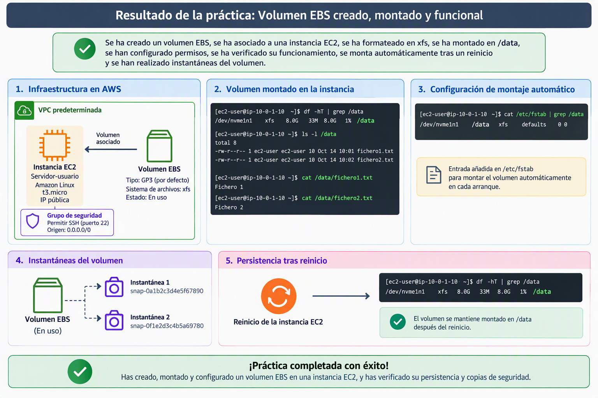

Práctica 1: Creación y montaje de un Volumen EBS¶
Vamos a realizar una práctica en la que trabajaremos con varias fases del ciclo de vida un disco EBS. crearemos una disco EBS que posteriormente agregaremos a una instancia EC2. Una vez vinculado el disco, le daremos formato y lo asociaremos a un punto de montaje. Modificaremos los permisos para que el usuario ec2-user tenga control completo sobre él. Una vez finalizada la operativa, modificaremos /etc/fstab para que el disco se monte automáticamente en cada arranque, haremos un par de instantáneas y restauraciones del disco y, por último, automatizaremos las instantáneas con una política de Amazon Data Lifecycle Manager (DLM). Esta práctica se hará toda en la consola de AWS.

Creación de instancia EC2¶
- Cree una instancia EC2 en la Región us-east-1:
- Nombre:
Servidor-$username - AMI: Amazon Linux más actual que sea Apta para la capa gratuita
- Instancia t3.micro
- Utiliza el par de claves vockey
- Establece la máquina EC2 en la VPC predeterminada. Sin preferencias en AZ y Subred.
- Asignación automática de IP pública: Habilitar
- Crea una regla de seguridad llamada Permitir SSH abriendo el puerto 22 a cualquier origen
- Deja el almacenamiento y el resto de parámetros por defecto y pulsa el botón Lanzar instancia.
Crear volumen EBS, asociarlo y montarlo¶
- Siguiendo el siguiente manual vamos a crear un volumen Amazon EBS desde la consola. Ignora los pasos 10 y 11 y posteriormente asocialo a la instancia EC2 creada en el paso 1.
- Una vez creado el volumen y asociado, sigue el siguiente manual para dar formato y montarlo en el sistema Amazon Linux. Haz que el sistema de archivos sea xfs y que el punto de montaje sea /data.
- Una vez tengamos la carpeta montada vamos a dar permisos al usuario actual para que pueda trabajar con la carpeta:
- Comprueba que puedes leer y escribir en la carpeta. Por ejemplo creando algunos ficheros de texto con comandos y luego leyéndolos. Ejemplo:
-
Siguiendo los pasos del manual, haz que el dispositivo EBS se monte automáticamente después de un reinicio.
-
Reinicia la máquina EC2 y comprueba que el dispositivo está montado en la carpeta /data y que puedes leer y escribir en dicha carpeta.
Creación de instantáneas¶
-
Ahora vamos a realizar una instatánea del disco. Para ello detén la instancia EC2 y creamos la instatánea para ello puedes seguir el siguiente manual. Nombra a la instántanea como "Instántanea inicial".
-
Arrancamos de nuevo la máquina EC2 y una vez arrancada creamos ficheros nuevos en la carpeta
/datadonde se encuentra montado nuestra unidad EBS.
echo "Fichero 3" > /data/fichero3.txt
echo "Fichero 4" > /data/fichero4.txt
#Listamos los 4 ficheros que existen en /data
ls -l /data
-
Creamos una nueva instántanea que se llame "Segunda instántanea"
-
Una vez finalizada la instantánea arrancamos de nuevo la máquina EC2. Nos vamos a la carpeta /data y la vaciamos borrando todo el contenido que está dentro de ella.
# Añadiremos el parámetro -r si dentro de /data tenemos carpetas
rm /data/*
#Comprobamos que está vacía la carpeta
ls /data
Restauración de instantánea¶
Vamos a restaurar el volumen a partir de la instantánea. Para ello tenemos dos métodos:
-
Crear un nuevo volumen a partir de la instantánea y copiar el contenido al volumen actual.
-
Crear un nuevo volumen a partir de la instatánea y sustituir el disco EBS.
Vamos a utilizar el segundo método para restaurar la "Segunda instantanea". Para ello seguiremos el siguiente manual pero teniendo en cuenta lo siguiente.
Para poder desvincular el volumen desde la consola AWS, es necesario realizar el paso de desmontaje (paso d) en primer lugar. Recuerde que estamos sustituyendo un disco que no es raíz.
-
Una vez finalizada la sustitución de discos, monta el nuevo disco y comprueba que en data están los 4 fichero que creamos.
-
Comprueba si ha cambiado el blkid comparando el id del disco que nos da el comando
blkidcon el UUID que tenemos en/etc/fstab. Si ha cambiado, modifica fstab para que el nuevo volumen se remonte. -
Reinicia el sistema y comprueba que el nuevo volumen está montado.
Automatización de instantáneas con Data Lifecycle Manager¶
Hasta ahora hemos creado las instantáneas a mano. En un entorno real las copias se programan: Amazon Data Lifecycle Manager (DLM) crea instantáneas automáticamente con la frecuencia que indiquemos y borra las antiguas cuando se supera la retención. DLM no elige los volúmenes por su ID, sino por una etiqueta: protegerá todos los volúmenes que la tengan.
Vamos a crear una política que haga una instantánea cada hora del volumen montado en /data y conserve las 3 últimas.
Etiquetar el volumen¶
-
Ve a EC2 → Elastic Block Store → Volúmenes y selecciona el volumen que está montado ahora en
/data(el que creamos a partir de la "Segunda instantánea"). -
Abre la pestaña Etiquetas y pulsa Administrar etiquetas.
-
Pulsa Agregar etiqueta nueva y escribe:
- Clave:
backup - Valor:
practica1
- Clave:
-
Pulsa Guardar.
Las etiquetas distinguen mayúsculas y minúsculas. Escribe la clave y el valor exactamente igual en el volumen y en la política.
Crear la política de ciclo de vida¶
-
Ve a EC2 → Elastic Block Store → Administrador del ciclo de vida (Lifecycle Manager) y pulsa Crear política de ciclo de vida.
-
En Seleccionar el tipo de política, elige Política de instantáneas de EBS (EBS snapshot policy) y pulsa Siguiente. Si la consola te ofrece elegir entre una política predeterminada y una personalizada, elige la personalizada.
-
En Recursos de destino:
- Tipos de recursos de destino:
Volumen. - Etiquetas de recursos de destino: clave
backup, valorpractica1. Pulsa Agregar para que la etiqueta quede añadida.
- Tipos de recursos de destino:
-
Descripción:
Instantaneas cada hora - $username. -
Rol de IAM: elige Elegir otro rol y selecciona
LabRole.No elijas el rol predeterminado: la consola intentaría crear el rol
AWSDataLifecycleManagerDefaultRoley el laboratorio no permite crear roles. -
Etiquetas de la política: añade
Name=dlm-$username. -
Estado de la política: Habilitar. Pulsa Siguiente.
-
En Configurar la programación, rellena los Detalles de la programación:
- Nombre de la programación:
Cada-hora. - Frecuencia:
Diaria. - Cada:
1 hora. - A partir de: la hora actual en UTC más 5 minutos, en formato
hh:mm. Recuerda que la hora peninsular española es UTC+1 en invierno y UTC+2 en verano: si en España son las 17:40 en noviembre, escribe16:45. - Tipo de retención:
Recuento. - Conservar:
3.
- Nombre de la programación:
-
En Etiquetado:
- Marca Copiar etiquetas del origen, para que las instantáneas lleven la etiqueta del volumen.
- Pulsa Agregar etiqueta y añade
creado-por=dlm.
-
Deja desactivadas el resto de secciones (archivado de instantáneas, restauración rápida, copia entre regiones y uso compartido entre cuentas): generan costes adicionales que no necesitamos.
-
Pulsa Revisar política, comprueba el resumen y pulsa Crear política.
-
En la lista del Administrador del ciclo de vida, comprueba que la política aparece con estado Habilitada. Si aparece en estado Error, revisa el rol de IAM y la etiqueta y avisa al profesor.
Comprobar las instantáneas automáticas¶
-
DLM crea la primera instantánea dentro de la hora siguiente a la hora de inicio, así que puede tardar. Mientras tanto, responde en el fichero
respuestas-dlm.txt:- ¿Cuál es el RPO (pérdida máxima de datos) que garantiza esta política?
- ¿Hasta qué momento del pasado podríamos volver con 3 instantáneas cada hora?
- ¿Qué cambiarías en la programación si la empresa pidiera poder recuperar cualquier día de la última semana con un RPO de 24 horas?
-
Pasado ese tiempo, ve a EC2 → Elastic Block Store → Instantáneas y filtra por la etiqueta
creado-por=dlm. Debe aparecer al menos una instantánea del volumen. Haz una captura llamadadlm-instantaneas.png. -
(Opcional) Si vuelves más de 3 horas después, comprueba que solo se conservan 3 instantáneas: DLM ha borrado automáticamente las más antiguas.
Eliminar la política¶
Cuando termines, elimina la política para que no siga creando instantáneas:
-
En el Administrador del ciclo de vida, selecciona la política y pulsa Acciones → Eliminar política de ciclo de vida.
-
Eliminar la política no borra las instantáneas que ha creado. Ve a Instantáneas, filtra por
creado-por=dlm, selecciónalas y pulsa Acciones → Eliminar instantánea.
¡Felicidades! Has finalizado la práctica.
Recuerda borrar todos los recursos creados para no consumir saldo de AWS